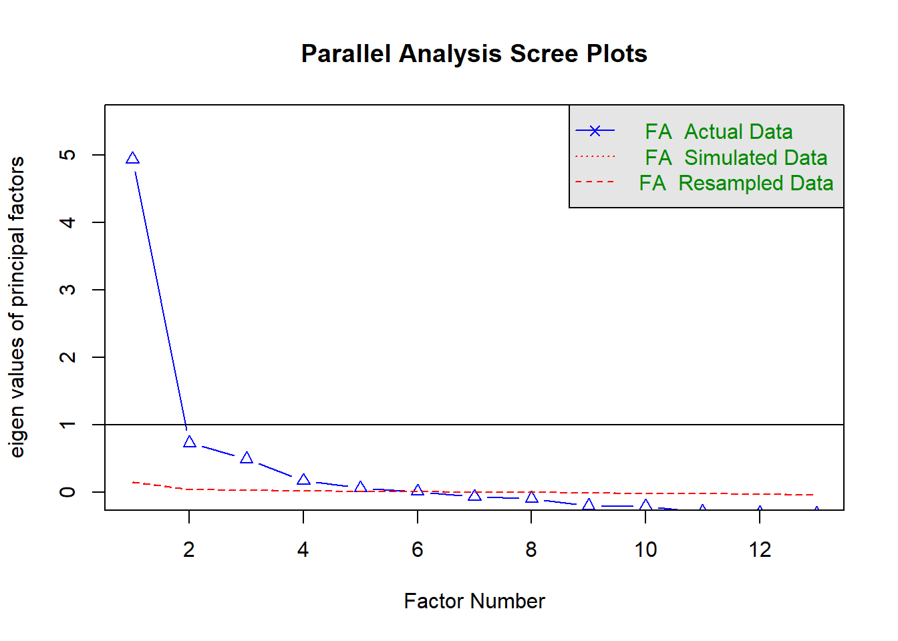
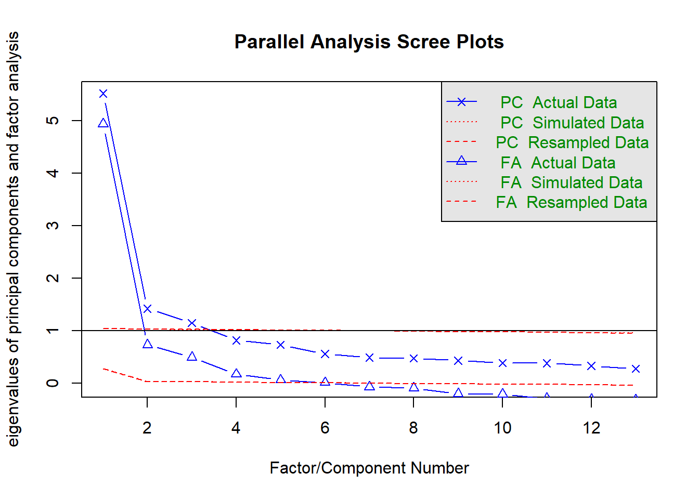
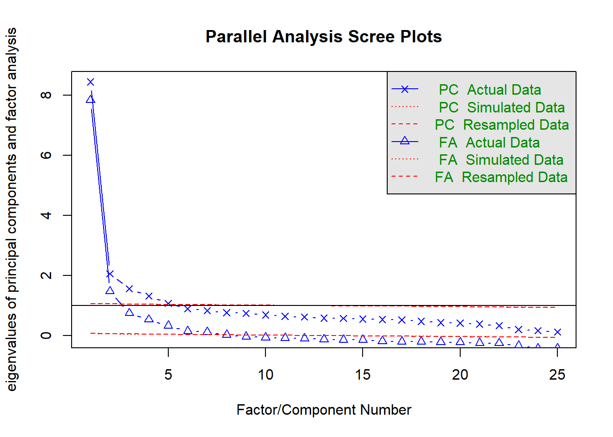
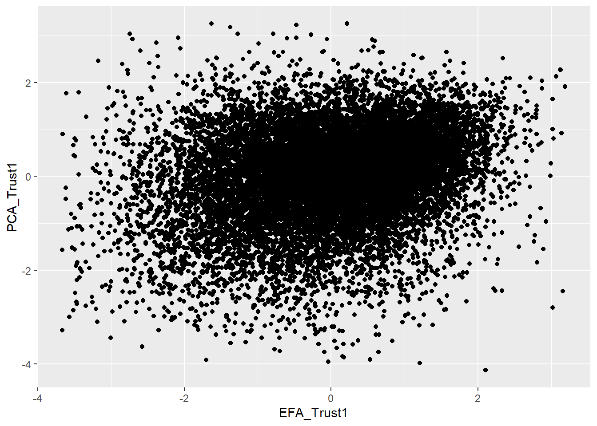

2.5 In-Class Exercises
In these exercises, we will continue with our re-analysis/replication of the Kestilä (2006) results. Rather than attempting a direct replication, we will now redo the analysis using exploratory factor analysis (EFA).
2.5.1 Load the ESSround1-a.csv dataset
library(foreign)
ess <- read.csv("ESSround1-b.csv", to.data.frame = TRUE)## name essround edition proddate
## Length:18187 Min. :1 Min. :6.1 Length:18187
## Class :character 1st Qu.:1 1st Qu.:6.1 Class :character
## Mode :character Median :1 Median :6.1 Mode :character
## Mean :1 Mean :6.1
## 3rd Qu.:1 3rd Qu.:6.1
## Max. :1 Max. :6.1
##
## cntry idno pltcare pltinvt
## Length:18187 Min. : 1 Min. :1.000 Min. :1.000
## Class :character 1st Qu.: 1854 1st Qu.:2.000 1st Qu.:2.000
## Mode :character Median : 23436 Median :3.000 Median :2.000
## Mean : 403707 Mean :2.575 Mean :2.435
## 3rd Qu.: 211313 3rd Qu.:3.000 3rd Qu.:3.000
## Max. :4136400 Max. :5.000 Max. :5.000
## NA's :212 NA's :216
## trstprl trstlgl trstplc trstplt
## Min. : 1.000 Min. : 1.000 Min. : 1.000 Min. : 1.000
## 1st Qu.: 5.000 1st Qu.: 5.000 1st Qu.: 6.000 1st Qu.: 4.000
## Median : 6.000 Median : 7.000 Median : 8.000 Median : 6.000
## Mean : 6.283 Mean : 6.882 Mean : 7.705 Mean : 5.306
## 3rd Qu.: 8.000 3rd Qu.: 9.000 3rd Qu.: 9.000 3rd Qu.: 7.000
## Max. :11.000 Max. :11.000 Max. :11.000 Max. :11.000
## NA's :434 NA's :304 NA's :125 NA's :221
## trstep trstun stfeco stfgov
## Min. : 1.00 Min. : 1.000 Min. : 1.000 Min. : 1.000
## 1st Qu.: 4.00 1st Qu.: 5.000 1st Qu.: 4.000 1st Qu.: 4.000
## Median : 6.00 Median : 7.000 Median : 6.000 Median : 6.000
## Mean : 5.63 Mean : 6.737 Mean : 6.127 Mean : 5.507
## 3rd Qu.: 7.00 3rd Qu.: 8.000 3rd Qu.: 8.000 3rd Qu.: 7.000
## Max. :11.00 Max. :11.000 Max. :11.000 Max. :11.000
## NA's :1797 NA's :1182 NA's :459 NA's :566
## stfdem stfedu stfhlth imsmetn
## Min. : 1.000 Min. : 1.000 Min. : 1.000 Min. :1.000
## 1st Qu.: 6.000 1st Qu.: 5.000 1st Qu.: 5.000 1st Qu.:2.000
## Median : 7.000 Median : 7.000 Median : 7.000 Median :2.000
## Mean : 6.823 Mean : 6.984 Mean : 6.794 Mean :2.196
## 3rd Qu.: 8.000 3rd Qu.: 9.000 3rd Qu.: 9.000 3rd Qu.:3.000
## Max. :11.000 Max. :11.000 Max. :11.000 Max. :4.000
## NA's :563 NA's :807 NA's :206 NA's :670
## imdfetn eimrcnt eimpcnt imrcntr
## Min. :1.000 Min. :1.000 Min. :1.000 Min. :1.000
## 1st Qu.:2.000 1st Qu.:2.000 1st Qu.:2.000 1st Qu.:2.000
## Median :2.000 Median :2.000 Median :2.000 Median :2.000
## Mean :2.426 Mean :2.329 Mean :2.331 Mean :2.429
## 3rd Qu.:3.000 3rd Qu.:3.000 3rd Qu.:3.000 3rd Qu.:3.000
## Max. :4.000 Max. :4.000 Max. :4.000 Max. :4.000
## NA's :655 NA's :757 NA's :620 NA's :761
## impcntr qfimchr qfimwht imwgdwn
## Min. :1.000 Min. : 1.000 Min. : 1.00 Min. :1.000
## 1st Qu.:2.000 1st Qu.: 1.000 1st Qu.: 1.00 1st Qu.:2.000
## Median :2.000 Median : 3.000 Median : 2.00 Median :3.000
## Mean :2.407 Mean : 4.054 Mean : 2.99 Mean :3.201
## 3rd Qu.:3.000 3rd Qu.: 6.000 3rd Qu.: 4.00 3rd Qu.:4.000
## Max. :4.000 Max. :11.000 Max. :11.00 Max. :5.000
## NA's :697 NA's :354 NA's :253 NA's :1140
## imhecop imtcjob imbleco imbgeco
## Min. :1.000 Min. : 1.000 Min. : 1.000 Min. : 1.000
## 1st Qu.:2.000 1st Qu.: 5.000 1st Qu.: 4.000 1st Qu.: 5.000
## Median :3.000 Median : 6.000 Median : 6.000 Median : 6.000
## Mean :2.889 Mean : 5.964 Mean : 5.286 Mean : 6.151
## 3rd Qu.:4.000 3rd Qu.: 7.000 3rd Qu.: 6.000 3rd Qu.: 8.000
## Max. :5.000 Max. :11.000 Max. :11.000 Max. :11.000
## NA's :1017 NA's :765 NA's :873 NA's :871
## imueclt imwbcnt imwbcrm imrsprc
## Min. : 1.000 Min. : 1.000 Min. : 1.000 Min. :1.000
## 1st Qu.: 6.000 1st Qu.: 5.000 1st Qu.: 3.000 1st Qu.:2.000
## Median : 7.000 Median : 6.000 Median : 4.000 Median :2.000
## Mean : 7.183 Mean : 5.964 Mean : 4.101 Mean :2.653
## 3rd Qu.: 9.000 3rd Qu.: 7.000 3rd Qu.: 6.000 3rd Qu.:3.000
## Max. :11.000 Max. :11.000 Max. :11.000 Max. :5.000
## NA's :629 NA's :614 NA's :497 NA's :419
## pplstrd vrtrlg shrrfg rfgawrk gvrfgap
## Min. :1.0 Min. :1.000 Min. :1.000 Min. :1.000 Min. :1.000
## 1st Qu.:2.0 1st Qu.:2.000 1st Qu.:2.000 1st Qu.:2.000 1st Qu.:3.000
## Median :3.0 Median :3.000 Median :2.000 Median :2.000 Median :3.000
## Mean :2.8 Mean :2.984 Mean :2.487 Mean :2.393 Mean :3.326
## 3rd Qu.:4.0 3rd Qu.:4.000 3rd Qu.:3.000 3rd Qu.:3.000 3rd Qu.:4.000
## Max. :5.0 Max. :5.000 Max. :5.000 Max. :5.000 Max. :5.000
## NA's :249 NA's :484 NA's :1500 NA's :530 NA's :540
## rfgfrpc rfggvfn rfgbfml trustinst
## Min. :1.000 Min. :1.000 Min. :1.00 Min. :-4.137
## 1st Qu.:2.000 1st Qu.:2.000 1st Qu.:2.00 1st Qu.:-0.595
## Median :3.000 Median :2.000 Median :3.00 Median : 0.104
## Mean :2.818 Mean :2.787 Mean :2.93 Mean : 0.000
## 3rd Qu.:4.000 3rd Qu.:4.000 3rd Qu.:4.00 3rd Qu.: 0.690
## Max. :5.000 Max. :5.000 Max. :5.00 Max. : 3.257
## NA's :1919 NA's :560 NA's :534 NA's :3409
## satcntry trustpol allowimmi effectimmi
## Min. :-3.736 Min. :-3.246 Min. :-3.699 Min. :-4.129
## 1st Qu.:-0.675 1st Qu.:-0.703 1st Qu.:-0.635 1st Qu.:-0.585
## Median : 0.079 Median : 0.044 Median :-0.096 Median : 0.049
## Mean : 0.000 Mean : 0.000 Mean :-0.018 Mean : 0.001
## 3rd Qu.: 0.733 3rd Qu.: 0.698 3rd Qu.: 0.697 3rd Qu.: 0.638
## Max. : 3.457 Max. : 3.531 Max. : 3.446 Max. : 4.679
## NA's :3409 NA's :3409 NA's :5129 NA's :5129
## allowref immicult immieco gndr
## Min. :-3.775 Min. :-2.766 Min. :-3.451 Length:18187
## 1st Qu.:-0.643 1st Qu.:-0.768 1st Qu.:-0.625 Class :character
## Median : 0.004 Median :-0.129 Median : 0.091 Mode :character
## Mean : 0.029 Mean : 0.001 Mean : 0.047
## 3rd Qu.: 0.657 3rd Qu.: 0.684 3rd Qu.: 0.738
## Max. : 4.084 Max. : 4.049 Max. : 3.270
## NA's :5129 NA's :5129 NA's :5129
## yrbrn edulvl eduyrs polintr
## Min. :1900 Length:18187 Min. : 0.00 Length:18187
## 1st Qu.:1943 Class :character 1st Qu.:10.00 Class :character
## Median :1957 Mode :character Median :12.00 Mode :character
## Mean :1956 Mean :12.46
## 3rd Qu.:1970 3rd Qu.:15.00
## Max. :1989 Max. :40.00
## NA's :122 NA's :176
## lrscale filter_.
## Length:18187 Length:18187
## Class :character Class :character
## Mode :character Mode :character
##
##
##
## 2.5.2
Kestilä (2006) claimed that running a PCA is a good way to test if the questions in the ESS measure attitudes towards immigration and trust in politics.
- Based on what you’ve learned from the readings and lectures, do you agree with this position?
Click for information
Hopefully not. PCA is not a method for estimating latent measurement structure; PCA is a dimension reduction technique that tries to summarize a set of data with a smaller set of component scores.
If we really want to estimate the factor structure underlying a set of observed variables, we should use EFA.
2.5.3
Suppose you had to construct the trust in politics and attitude towards immigration scales described by Kestilä (2006) based on the theory and background information presented in that article.
- What type of analysis would you choose?
- What key factors would influence your decision?
Click for information
- We are trying to estimate meaningful latent factors, so EFA would be an appropriate method.
- The theory presented by Kestilä (2006) did not hypothesize a particular number
of factors, so we would need to use appropriate techniques to estimate the best
number. In particular, combining information from:
- Scree plots
- Parallel analysis
- Substantive interpretability of the (rotated) factor loadings
- Since the factors are almost certainly correlated, we should apply an oblique rotation.
We will now rerun the two PCAs that you conducted for the At-Home Exercises using EFA.
We need to know how many factors to extract to estimate an EFA using the
psych::fa() function.
- We could simply estimate a range of solutions and compare the results.
- We can restrict the range of plausible solutions and save some time by first checking/plotting the eigenvalues and running parallel analysis.
2.5.4
Estimate the number of latent factors underlying the Trust items based on the eigenvalues, the scree plot, and parallel analysis.
- How many factors are suggested by each method?
Hints:
- You can estimate the eigenvalues of a data matrix with the
eigen()function from Base-R.- Check the Value section of the documentation for
eigen()to find information on how to extract the eigenvalues.
- Check the Value section of the documentation for
- You can create a scree plot by supplying the vector of eigenvalues to the
qplot()function from theggplot2package and applying thegeom_path()geometry.
Click for explanation
First, we’ll run a trivial EFA using the psych::fa() function to get eigenvalues.
- We don’t care about the factors yet, so we can extract a single factor.
- We also don’t care about interpretable solutions, so we don’t need rotation.
## Load the psych package:
library(psych)
## Run a trival EFA on the 'trust' items
efa_trust0 <- fa(ess[7:19], nfactors = 1, rotate = "none")We can check the eigenvalues to see what proportion of the observed variance is accounted for by each additional factor we may extract.
round(efa_trust0$values, digits = 3)## [1] 4.940 0.733 0.492 0.173 0.064 0.014 -0.066 -0.091 -0.195 -0.210
## [11] -0.289 -0.307 -0.318Since only one eigenvalue is greater than one, the so-called “Kaiser Criterion” would suggest extracting a single factor.
- The Kaiser Criterion is not a valid way to select the number of factors in EFA. So, we don’t want to rely on this information alone.
We can still use the eigenvalues to help us with factor enumeration, though. One way to do so is by plotting the eigenvalues in a scree plot.
- We can easily create a scree plot by passing the eigenvalues to the
qplot()function from theggplot2package and add apply thegeom_path()geometry:
library(ggplot2)
qplot(y = efa_trust0$values) +
geom_path() +
ylab("Eigenvalues") +
xlab("Factors")
Although the scree plot provides useful information, we need to interpret that information subjectively, and the conclusions are sometimes ambiguous.
- In this case, the plot seems to suggest either one or three components, depending on where we consider the “elbow” to lie.
As recommended in the lecture, we can also use “parallel analysis” (Horn, 1965)
to provide more quantified information about the number of factors. We’ll use
the psych::fa.parallel() function to implement parallel analysis.
- Parallel analysis relies on randomly simulated/permuted data, so we should set a seed to make sure our results are reproducible.
- We can set the
fa = "fa"option to get only the results for EFA.
## Set the random number seed:
set.seed(235711)
## Run the parallel analysis:
pa_trust <- fa.parallel(ess[7:19], fa = "fa")
## Parallel analysis suggests that the number of factors = 6 and the number of components = NAThe results of the parallel analysis suggest 6 factors.
If you’ve been paying close attention, you may have noticed that we need to compute the eigenvalues from the original data to run parallel analysis. Hence, we don’t actually need to run a separate EFA to estimate the eigenvalues.
## View the eigenvalues estimated during the parallel analysis:
pa_trust$fa.values## [1] 4.93985031 0.73335474 0.49174655 0.17294854 0.06372444 0.01363969
## [7] -0.06605432 -0.09109183 -0.19535125 -0.20991379 -0.28855561 -0.30662420
## [13] -0.31782296## Compare to the version from the EFA:
pa_trust$fa.values - efa_trust0$values## [1] 0 0 0 0 0 0 0 0 0 0 0 0 0## Recreate the scree plot from above:
qplot(y = pa_trust$fa.values) +
geom_path() +
ylab("Eigenvalues") +
xlab("Factors")
The different criteria disagree on how many factors we should extract, but we have narrowed the range.
- Based on the scree plot and parallel analysis, we should consider solutions for 3 to 6 factors.
- We need to examine the factor loadings to see which solution makes the most substantive sense.
2.5.5
Do the same analysis for the attitudes toward immigration items.
Click for explanation
This time, we’ll start by running the parallel analysis and get the eigenvalues
from the object returned by psych::fa.parallel().
## Set the seed:
set.seed(235711)
## Run parallel analysis on the 'attitudes' items:
pa_att <- fa.parallel(ess[20:44])
## Parallel analysis suggests that the number of factors = 7 and the number of components = 5## Check the eigenvalues:
round(pa_att$fa.values, digits = 3)## [1] 7.841 1.474 0.748 0.534 0.327 0.152 0.123 0.025 -0.033 -0.064
## [11] -0.081 -0.098 -0.121 -0.137 -0.145 -0.179 -0.196 -0.204 -0.214 -0.222
## [21] -0.246 -0.253 -0.331 -0.425 -0.432## Create a scree plot:
qplot(y = pa_att$fa.values) +
geom_path() +
ylab("Eigenvalues") +
xlab("Factors")
For the attitudes toward immigration analysis, the results are even more ambiguous than they were for the trust items.
- The Kaiser Criterion suggests 2 factors
- The scree plot is hopelessly ambiguous
- At least 3 factors?
- No more than 9 factors?
- Parallel analysis suggests 7 factors
Based on the scree plot and parallel analysis, it seems reasonable to consider solutions for 3 to 7 factors.
- Again, we need to check the substantive interpretation to choose the most reasonable solution.
To perform EFA using the fa() function, we need to specify a few key options.
- The data (including only the variables you want to analyze)
- The number of factors that you want to extract
- The rotation method
- The estimation method
- The method of estimating factor scores
2.5.6
Apart from the number of factors, you also want to look at the factor loadings. They can be found in the “pattern matrix”. The higher the factor loadings are, the more indicative an item is for the latent factor. If you find some items to have only very low loadings (indicating that the items do not provide much information about the factor), you may choose not to include them in your analysis. This means you have to rerun the analysis under question 3.
Click for explanation
You can find the factor loadings by means of the ‘print’-function used in the take-home exercise, or you can search for the variable ‘loadings’, which is inside the results object, to end up with just the information you are searching for.
## Define an empty list to hold all of our fitted EFA objects:
efa_trust <- list()
## Loop through the interesting numbers of factors and estimate an EFA for each:
for(i in 3:6)
efa_trust[[i - 2]] <- fa(ess[7:19],
nfactors = i, # Number of factors = Loop index
rotate = "promax", # Oblique rotation
scores = "Bartlett") # Extimate factor scores with WLS
## Do the same for the 'attitudes' items:
efa_att <- list()
for(i in 3:7)
efa_att[[i - 2]] <- fa(ess[20:44],
nfactors = i, # Number of factors = Loop index
rotate = "promax", # Oblique rotation
scores = "Bartlett") # Extimate factor scores with WLS
lapply(efa_trust, function(x) print(x$loadings, cut = 0))##
## Loadings:
## MR3 MR1 MR2
## pltcare -0.103 0.815 -0.044
## pltinvt -0.100 0.806 -0.062
## trstprl 0.405 0.381 0.093
## trstlgl 0.843 -0.103 -0.012
## trstplc 0.776 -0.217 0.053
## trstplt 0.279 0.571 0.076
## trstep 0.503 0.243 -0.051
## trstun 0.543 0.199 -0.064
## stfeco -0.121 0.156 0.703
## stfgov -0.051 0.246 0.594
## stfdem 0.180 0.166 0.462
## stfedu 0.071 -0.168 0.701
## stfhlth 0.005 -0.134 0.664
##
## MR3 MR1 MR2
## SS loadings 2.178 2.101 2.023
## Proportion Var 0.168 0.162 0.156
## Cumulative Var 0.168 0.329 0.485
##
## Loadings:
## MR2 MR1 MR4 MR3
## pltcare -0.047 -0.106 0.873 0.011
## pltinvt -0.064 -0.085 0.843 0.007
## trstprl 0.118 0.471 0.194 0.106
## trstlgl -0.030 0.056 0.067 0.785
## trstplc 0.053 0.001 -0.029 0.715
## trstplt 0.101 0.491 0.335 -0.002
## trstep -0.087 0.982 -0.171 -0.057
## trstun -0.061 0.670 -0.042 0.113
## stfeco 0.726 -0.017 0.093 -0.091
## stfgov 0.629 0.200 0.076 -0.157
## stfdem 0.485 0.129 0.110 0.091
## stfedu 0.712 -0.108 -0.106 0.108
## stfhlth 0.672 -0.088 -0.101 0.042
##
## MR2 MR1 MR4 MR3
## SS loadings 2.161 1.974 1.706 1.210
## Proportion Var 0.166 0.152 0.131 0.093
## Cumulative Var 0.166 0.318 0.449 0.542
##
## Loadings:
## MR1 MR5 MR4 MR3 MR2
## pltcare -0.054 0.872 -0.062 -0.035 0.019
## pltinvt -0.085 0.871 -0.049 -0.041 0.023
## trstprl 0.360 0.142 0.248 0.201 -0.104
## trstlgl -0.083 0.006 -0.049 0.940 -0.020
## trstplc -0.059 -0.069 -0.057 0.808 0.052
## trstplt 0.294 0.316 0.308 0.053 -0.056
## trstep -0.140 -0.105 1.123 -0.157 0.080
## trstun 0.011 0.026 0.515 0.163 -0.008
## stfeco 0.701 0.000 -0.120 -0.052 0.181
## stfgov 0.992 -0.109 -0.029 -0.129 -0.031
## stfdem 0.526 0.031 -0.010 0.158 0.089
## stfedu -0.035 0.033 0.043 0.050 0.746
## stfhlth 0.077 0.002 0.045 -0.011 0.578
##
## MR1 MR5 MR4 MR3 MR2
## SS loadings 2.016 1.668 1.714 1.681 0.956
## Proportion Var 0.155 0.128 0.132 0.129 0.074
## Cumulative Var 0.155 0.283 0.415 0.545 0.618
##
## Loadings:
## MR6 MR3 MR5 MR4 MR1 MR2
## pltcare -0.034 0.840 -0.031 -0.042 -0.009 0.002
## pltinvt -0.045 0.899 -0.018 -0.030 -0.086 -0.007
## trstprl -0.032 -0.065 -0.029 -0.054 1.068 -0.010
## trstlgl -0.117 0.005 0.742 -0.027 0.160 0.028
## trstplc 0.006 -0.048 0.955 -0.064 -0.141 -0.014
## trstplt 0.156 0.296 0.026 0.172 0.303 -0.014
## trstep -0.066 -0.081 -0.129 1.175 -0.070 0.061
## trstun 0.080 0.072 0.227 0.390 0.012 -0.053
## stfeco 0.588 0.030 -0.037 -0.071 0.000 0.216
## stfgov 1.041 -0.079 -0.074 0.007 -0.057 -0.101
## stfdem 0.423 0.051 0.151 -0.010 0.079 0.119
## stfedu 0.031 0.003 0.078 0.024 -0.084 0.688
## stfhlth -0.076 -0.014 -0.061 0.025 0.055 0.743
##
## MR6 MR3 MR5 MR4 MR1 MR2
## SS loadings 1.667 1.629 1.573 1.579 1.310 1.103
## Proportion Var 0.128 0.125 0.121 0.121 0.101 0.085
## Cumulative Var 0.128 0.254 0.375 0.496 0.597 0.682## [[1]]
##
## Loadings:
## MR3 MR1 MR2
## pltcare -0.103 0.815
## pltinvt -0.100 0.806
## trstprl 0.405 0.381
## trstlgl 0.843 -0.103
## trstplc 0.776 -0.217
## trstplt 0.279 0.571
## trstep 0.503 0.243
## trstun 0.543 0.199
## stfeco -0.121 0.156 0.703
## stfgov 0.246 0.594
## stfdem 0.180 0.166 0.462
## stfedu -0.168 0.701
## stfhlth -0.134 0.664
##
## MR3 MR1 MR2
## SS loadings 2.178 2.101 2.023
## Proportion Var 0.168 0.162 0.156
## Cumulative Var 0.168 0.329 0.485
##
## [[2]]
##
## Loadings:
## MR2 MR1 MR4 MR3
## pltcare -0.106 0.873
## pltinvt 0.843
## trstprl 0.118 0.471 0.194 0.106
## trstlgl 0.785
## trstplc 0.715
## trstplt 0.101 0.491 0.335
## trstep 0.982 -0.171
## trstun 0.670 0.113
## stfeco 0.726
## stfgov 0.629 0.200 -0.157
## stfdem 0.485 0.129 0.110
## stfedu 0.712 -0.108 -0.106 0.108
## stfhlth 0.672 -0.101
##
## MR2 MR1 MR4 MR3
## SS loadings 2.161 1.974 1.706 1.210
## Proportion Var 0.166 0.152 0.131 0.093
## Cumulative Var 0.166 0.318 0.449 0.542
##
## [[3]]
##
## Loadings:
## MR1 MR5 MR4 MR3 MR2
## pltcare 0.872
## pltinvt 0.871
## trstprl 0.360 0.142 0.248 0.201 -0.104
## trstlgl 0.940
## trstplc 0.808
## trstplt 0.294 0.316 0.308
## trstep -0.140 -0.105 1.123 -0.157
## trstun 0.515 0.163
## stfeco 0.701 -0.120 0.181
## stfgov 0.992 -0.109 -0.129
## stfdem 0.526 0.158
## stfedu 0.746
## stfhlth 0.578
##
## MR1 MR5 MR4 MR3 MR2
## SS loadings 2.016 1.668 1.714 1.681 0.956
## Proportion Var 0.155 0.128 0.132 0.129 0.074
## Cumulative Var 0.155 0.283 0.415 0.545 0.618
##
## [[4]]
##
## Loadings:
## MR6 MR3 MR5 MR4 MR1 MR2
## pltcare 0.840
## pltinvt 0.899
## trstprl 1.068
## trstlgl -0.117 0.742 0.160
## trstplc 0.955 -0.141
## trstplt 0.156 0.296 0.172 0.303
## trstep -0.129 1.175
## trstun 0.227 0.390
## stfeco 0.588 0.216
## stfgov 1.041 -0.101
## stfdem 0.423 0.151 0.119
## stfedu 0.688
## stfhlth 0.743
##
## MR6 MR3 MR5 MR4 MR1 MR2
## SS loadings 1.667 1.629 1.573 1.579 1.310 1.103
## Proportion Var 0.128 0.125 0.121 0.121 0.101 0.085
## Cumulative Var 0.128 0.254 0.375 0.496 0.597 0.682lapply(efa_att, function(x) print(x$loadings, cut = 0))##
## Loadings:
## MR1 MR2 MR3
## imsmetn -0.044 0.801 -0.029
## imdfetn -0.098 0.756 0.111
## eimrcnt 0.086 0.837 -0.027
## eimpcnt -0.078 0.813 0.024
## imrcntr 0.070 0.854 0.002
## impcntr -0.099 0.771 0.066
## qfimchr 0.233 -0.007 0.852
## qfimwht 0.135 0.072 0.712
## imwgdwn 0.308 -0.016 -0.163
## imhecop 0.380 -0.020 -0.143
## imtcjob 0.615 0.028 0.048
## imbleco 0.691 0.069 0.088
## imbgeco 0.681 0.026 -0.023
## imueclt 0.558 0.035 -0.209
## imwbcnt 0.731 0.036 -0.059
## imwbcrm 0.634 0.076 0.058
## imrsprc -0.487 0.089 -0.119
## pplstrd 0.259 0.014 -0.413
## vrtrlg -0.261 -0.030 0.274
## shrrfg 0.529 -0.031 -0.105
## rfgawrk -0.368 0.008 -0.039
## gvrfgap -0.615 0.082 -0.151
## rfgfrpc 0.449 -0.056 -0.051
## rfggvfn -0.478 0.061 -0.072
## rfgbfml -0.541 0.034 -0.068
##
## MR1 MR2 MR3
## SS loadings 4.811 3.943 1.667
## Proportion Var 0.192 0.158 0.067
## Cumulative Var 0.192 0.350 0.417
##
## Loadings:
## MR2 MR1 MR4 MR3
## imsmetn 0.788 -0.016 0.063 -0.039
## imdfetn 0.734 0.009 0.144 0.115
## eimrcnt 0.854 -0.084 -0.146 -0.076
## eimpcnt 0.788 0.048 0.161 0.034
## imrcntr 0.861 -0.057 -0.100 -0.037
## impcntr 0.744 0.057 0.191 0.081
## qfimchr -0.029 0.098 -0.141 0.859
## qfimwht 0.045 0.094 -0.043 0.735
## imwgdwn -0.052 0.601 0.237 -0.070
## imhecop -0.058 0.656 0.210 -0.044
## imtcjob -0.007 0.671 -0.026 0.141
## imbleco 0.039 0.607 -0.157 0.156
## imbgeco -0.004 0.635 -0.123 0.051
## imueclt 0.029 0.368 -0.241 -0.187
## imwbcnt 0.016 0.536 -0.262 -0.016
## imwbcrm 0.059 0.430 -0.257 0.087
## imrsprc 0.048 0.072 0.605 -0.058
## pplstrd 0.015 0.219 -0.071 -0.396
## vrtrlg -0.047 -0.063 0.220 0.295
## shrrfg -0.031 0.300 -0.277 -0.095
## rfgawrk -0.024 0.049 0.447 0.012
## gvrfgap 0.029 0.078 0.765 -0.086
## rfgfrpc -0.052 0.228 -0.263 -0.049
## rfggvfn 0.033 -0.036 0.483 -0.030
## rfgbfml -0.010 0.042 0.635 -0.005
##
## MR2 MR1 MR4 MR3
## SS loadings 3.831 2.867 2.460 1.671
## Proportion Var 0.153 0.115 0.098 0.067
## Cumulative Var 0.153 0.268 0.366 0.433
##
## Loadings:
## MR2 MR1 MR5 MR3 MR4
## imsmetn 0.794 0.015 0.065 -0.037 -0.012
## imdfetn 0.733 0.050 0.156 0.117 -0.022
## eimrcnt 0.905 -0.139 -0.229 -0.072 0.053
## eimpcnt 0.781 0.110 0.197 0.033 -0.030
## imrcntr 0.908 -0.117 -0.179 -0.032 0.059
## impcntr 0.734 0.123 0.231 0.080 -0.035
## qfimchr -0.025 0.114 -0.156 0.864 -0.018
## qfimwht 0.033 0.165 -0.017 0.735 -0.064
## imwgdwn 0.028 -0.006 0.053 -0.049 0.717
## imhecop 0.015 0.075 0.040 -0.021 0.695
## imtcjob -0.022 0.532 0.012 0.129 0.207
## imbleco -0.003 0.691 -0.002 0.142 0.029
## imbgeco -0.059 0.793 0.093 0.034 -0.008
## imueclt -0.011 0.560 -0.050 -0.211 -0.080
## imwbcnt -0.029 0.711 -0.059 -0.036 -0.041
## imwbcrm 0.026 0.557 -0.110 0.074 -0.027
## imrsprc 0.022 0.019 0.610 -0.064 0.034
## pplstrd 0.002 0.224 -0.006 -0.406 0.046
## vrtrlg -0.025 -0.222 0.102 0.308 0.103
## shrrfg -0.023 0.228 -0.266 -0.098 0.121
## rfgawrk -0.045 0.020 0.450 0.007 0.006
## gvrfgap -0.005 0.016 0.778 -0.096 0.038
## rfgfrpc -0.025 0.081 -0.317 -0.046 0.165
## rfggvfn 0.008 -0.020 0.503 -0.036 -0.038
## rfgbfml -0.016 -0.110 0.562 -0.006 0.097
##
## MR2 MR1 MR5 MR3 MR4
## SS loadings 3.974 2.799 2.193 1.693 1.131
## Proportion Var 0.159 0.112 0.088 0.068 0.045
## Cumulative Var 0.159 0.271 0.359 0.426 0.472
##
## Loadings:
## MR2 MR1 MR6 MR3 MR5 MR4
## imsmetn 0.696 -0.014 0.011 -0.037 0.175 -0.006
## imdfetn 0.834 -0.042 -0.012 0.094 0.004 0.013
## eimrcnt 0.236 0.016 0.024 -0.047 0.868 0.001
## eimpcnt 0.943 0.003 -0.010 -0.001 -0.031 0.013
## imrcntr 0.447 -0.005 -0.002 0.004 0.526 0.014
## impcntr 0.956 0.012 0.003 0.044 -0.088 0.013
## qfimchr -0.017 0.140 -0.120 0.858 -0.003 -0.022
## qfimwht 0.081 0.174 -0.015 0.723 -0.028 -0.062
## imwgdwn 0.026 -0.031 0.020 -0.052 -0.002 0.723
## imhecop -0.002 0.073 0.025 -0.022 0.008 0.678
## imtcjob 0.001 0.551 0.021 0.127 -0.014 0.202
## imbleco -0.023 0.753 0.057 0.150 0.033 0.013
## imbgeco 0.006 0.813 0.095 0.032 -0.046 -0.008
## imueclt 0.018 0.567 -0.052 -0.210 -0.020 -0.076
## imwbcnt -0.015 0.744 -0.031 -0.033 -0.004 -0.046
## imwbcrm -0.001 0.601 -0.062 0.079 0.036 -0.038
## imrsprc 0.158 -0.025 0.514 -0.074 -0.103 0.047
## pplstrd 0.006 0.222 -0.015 -0.402 -0.005 0.047
## vrtrlg -0.018 -0.224 0.100 0.305 -0.008 0.101
## shrrfg -0.002 0.217 -0.281 -0.102 -0.029 0.125
## rfgawrk -0.073 0.066 0.499 0.016 0.032 -0.009
## gvrfgap 0.022 0.042 0.786 -0.091 -0.004 0.031
## rfgfrpc -0.083 0.100 -0.279 -0.042 0.038 0.156
## rfggvfn -0.006 0.012 0.530 -0.029 0.027 -0.050
## rfgbfml -0.056 -0.067 0.610 0.005 0.045 0.082
##
## MR2 MR1 MR6 MR3 MR5 MR4
## SS loadings 3.289 2.992 1.988 1.649 1.091 1.102
## Proportion Var 0.132 0.120 0.080 0.066 0.044 0.044
## Cumulative Var 0.132 0.251 0.331 0.397 0.440 0.484
##
## Loadings:
## MR2 MR1 MR6 MR7 MR5 MR4 MR3
## imsmetn 0.715 -0.028 0.015 0.060 0.170 -0.005 -0.009
## imdfetn 0.854 -0.031 -0.017 -0.029 0.003 0.011 0.070
## eimrcnt 0.255 0.029 0.018 -0.040 0.852 -0.003 -0.064
## eimpcnt 0.965 -0.011 -0.009 0.062 -0.032 0.014 0.021
## imrcntr 0.467 0.006 -0.006 -0.033 0.516 0.011 -0.015
## impcntr 0.978 0.009 -0.003 0.023 -0.087 0.012 0.042
## qfimchr 0.005 0.038 -0.060 -0.231 -0.012 -0.014 0.625
## qfimwht 0.084 -0.010 0.107 0.019 -0.050 -0.039 0.718
## imwgdwn 0.024 0.001 0.025 -0.058 -0.003 0.735 -0.052
## imhecop 0.000 0.033 0.054 0.033 0.004 0.715 0.011
## imtcjob -0.002 0.573 -0.040 -0.163 -0.005 0.198 0.001
## imbleco -0.029 0.709 0.007 -0.067 0.041 0.003 0.045
## imbgeco 0.001 0.852 0.021 -0.108 -0.032 -0.039 -0.087
## imueclt 0.014 0.435 -0.049 0.288 -0.020 -0.075 -0.110
## imwbcnt -0.018 0.576 -0.030 0.235 -0.004 -0.039 0.013
## imwbcrm 0.000 0.423 -0.029 0.225 0.032 -0.028 0.122
## imrsprc 0.160 0.003 0.480 -0.031 -0.100 0.047 -0.058
## pplstrd 0.023 -0.023 0.100 0.648 -0.022 0.072 -0.109
## vrtrlg -0.026 -0.022 0.013 -0.527 0.005 0.094 0.069
## shrrfg 0.003 0.057 -0.212 0.324 -0.038 0.149 0.032
## rfgawrk -0.073 0.002 0.517 0.079 0.027 0.000 0.067
## gvrfgap 0.024 0.053 0.744 -0.021 -0.005 0.030 -0.065
## rfgfrpc -0.082 -0.029 -0.213 0.237 0.030 0.182 0.059
## rfggvfn -0.006 -0.033 0.542 0.077 0.023 -0.045 0.030
## rfgbfml -0.055 -0.066 0.599 -0.036 0.042 0.089 0.021
##
## MR2 MR1 MR6 MR7 MR5 MR4 MR3
## SS loadings 3.462 2.275 1.830 1.175 1.052 1.184 0.991
## Proportion Var 0.138 0.091 0.073 0.047 0.042 0.047 0.040
## Cumulative Var 0.138 0.229 0.303 0.350 0.392 0.439 0.479## [[1]]
##
## Loadings:
## MR1 MR2 MR3
## imsmetn 0.801
## imdfetn 0.756 0.111
## eimrcnt 0.837
## eimpcnt 0.813
## imrcntr 0.854
## impcntr 0.771
## qfimchr 0.233 0.852
## qfimwht 0.135 0.712
## imwgdwn 0.308 -0.163
## imhecop 0.380 -0.143
## imtcjob 0.615
## imbleco 0.691
## imbgeco 0.681
## imueclt 0.558 -0.209
## imwbcnt 0.731
## imwbcrm 0.634
## imrsprc -0.487 -0.119
## pplstrd 0.259 -0.413
## vrtrlg -0.261 0.274
## shrrfg 0.529 -0.105
## rfgawrk -0.368
## gvrfgap -0.615 -0.151
## rfgfrpc 0.449
## rfggvfn -0.478
## rfgbfml -0.541
##
## MR1 MR2 MR3
## SS loadings 4.811 3.943 1.667
## Proportion Var 0.192 0.158 0.067
## Cumulative Var 0.192 0.350 0.417
##
## [[2]]
##
## Loadings:
## MR2 MR1 MR4 MR3
## imsmetn 0.788
## imdfetn 0.734 0.144 0.115
## eimrcnt 0.854 -0.146
## eimpcnt 0.788 0.161
## imrcntr 0.861
## impcntr 0.744 0.191
## qfimchr -0.141 0.859
## qfimwht 0.735
## imwgdwn 0.601 0.237
## imhecop 0.656 0.210
## imtcjob 0.671 0.141
## imbleco 0.607 -0.157 0.156
## imbgeco 0.635 -0.123
## imueclt 0.368 -0.241 -0.187
## imwbcnt 0.536 -0.262
## imwbcrm 0.430 -0.257
## imrsprc 0.605
## pplstrd 0.219 -0.396
## vrtrlg 0.220 0.295
## shrrfg 0.300 -0.277
## rfgawrk 0.447
## gvrfgap 0.765
## rfgfrpc 0.228 -0.263
## rfggvfn 0.483
## rfgbfml 0.635
##
## MR2 MR1 MR4 MR3
## SS loadings 3.831 2.867 2.460 1.671
## Proportion Var 0.153 0.115 0.098 0.067
## Cumulative Var 0.153 0.268 0.366 0.433
##
## [[3]]
##
## Loadings:
## MR2 MR1 MR5 MR3 MR4
## imsmetn 0.794
## imdfetn 0.733 0.156 0.117
## eimrcnt 0.905 -0.139 -0.229
## eimpcnt 0.781 0.110 0.197
## imrcntr 0.908 -0.117 -0.179
## impcntr 0.734 0.123 0.231
## qfimchr 0.114 -0.156 0.864
## qfimwht 0.165 0.735
## imwgdwn 0.717
## imhecop 0.695
## imtcjob 0.532 0.129 0.207
## imbleco 0.691 0.142
## imbgeco 0.793
## imueclt 0.560 -0.211
## imwbcnt 0.711
## imwbcrm 0.557 -0.110
## imrsprc 0.610
## pplstrd 0.224 -0.406
## vrtrlg -0.222 0.102 0.308 0.103
## shrrfg 0.228 -0.266 0.121
## rfgawrk 0.450
## gvrfgap 0.778
## rfgfrpc -0.317 0.165
## rfggvfn 0.503
## rfgbfml -0.110 0.562
##
## MR2 MR1 MR5 MR3 MR4
## SS loadings 3.974 2.799 2.193 1.693 1.131
## Proportion Var 0.159 0.112 0.088 0.068 0.045
## Cumulative Var 0.159 0.271 0.359 0.426 0.472
##
## [[4]]
##
## Loadings:
## MR2 MR1 MR6 MR3 MR5 MR4
## imsmetn 0.696 0.175
## imdfetn 0.834
## eimrcnt 0.236 0.868
## eimpcnt 0.943
## imrcntr 0.447 0.526
## impcntr 0.956
## qfimchr 0.140 -0.120 0.858
## qfimwht 0.174 0.723
## imwgdwn 0.723
## imhecop 0.678
## imtcjob 0.551 0.127 0.202
## imbleco 0.753 0.150
## imbgeco 0.813
## imueclt 0.567 -0.210
## imwbcnt 0.744
## imwbcrm 0.601
## imrsprc 0.158 0.514 -0.103
## pplstrd 0.222 -0.402
## vrtrlg -0.224 0.305 0.101
## shrrfg 0.217 -0.281 -0.102 0.125
## rfgawrk 0.499
## gvrfgap 0.786
## rfgfrpc 0.100 -0.279 0.156
## rfggvfn 0.530
## rfgbfml 0.610
##
## MR2 MR1 MR6 MR3 MR5 MR4
## SS loadings 3.289 2.992 1.988 1.649 1.091 1.102
## Proportion Var 0.132 0.120 0.080 0.066 0.044 0.044
## Cumulative Var 0.132 0.251 0.331 0.397 0.440 0.484
##
## [[5]]
##
## Loadings:
## MR2 MR1 MR6 MR7 MR5 MR4 MR3
## imsmetn 0.715 0.170
## imdfetn 0.854
## eimrcnt 0.255 0.852
## eimpcnt 0.965
## imrcntr 0.467 0.516
## impcntr 0.978
## qfimchr -0.231 0.625
## qfimwht 0.107 0.718
## imwgdwn 0.735
## imhecop 0.715
## imtcjob 0.573 -0.163 0.198
## imbleco 0.709
## imbgeco 0.852 -0.108
## imueclt 0.435 0.288 -0.110
## imwbcnt 0.576 0.235
## imwbcrm 0.423 0.225 0.122
## imrsprc 0.160 0.480 -0.100
## pplstrd 0.648 -0.109
## vrtrlg -0.527
## shrrfg -0.212 0.324 0.149
## rfgawrk 0.517
## gvrfgap 0.744
## rfgfrpc -0.213 0.237 0.182
## rfggvfn 0.542
## rfgbfml 0.599
##
## MR2 MR1 MR6 MR7 MR5 MR4 MR3
## SS loadings 3.462 2.275 1.830 1.175 1.052 1.184 0.991
## Proportion Var 0.138 0.091 0.073 0.047 0.042 0.047 0.040
## Cumulative Var 0.138 0.229 0.303 0.350 0.392 0.439 0.479efa_trust <- efa_trust[[1]]
efa_att <- efa_att[[3]]The matrix of loadings indicates how strongly each factor (columns) is associated with the items (rows).
Below the matrix of loadings, we see a second matrix, which indicates (amongst other things) the
proportion var: How much variance in the items is explained by each of the factors.
Each subsequent factor explains slightly less variance than the ones before it (this is a property of exploratory factor analysis).
The cumulative var indicates how much variance the factors explain, in total. If you estimated as many factors as items, then the last value for cumulative var would be 1.00 (100%).
The factor loading matrix is slightly hard to read, due to the jumble of factor loadings. To create more clarity, it is convenient to suppress the factor loadings that are lower than .30.
print(efa_trust$loadings, cut = .30, digits = 2)##
## Loadings:
## MR3 MR1 MR2
## pltcare 0.82
## pltinvt 0.81
## trstprl 0.41 0.38
## trstlgl 0.84
## trstplc 0.78
## trstplt 0.57
## trstep 0.50
## trstun 0.54
## stfeco 0.70
## stfgov 0.59
## stfdem 0.46
## stfedu 0.70
## stfhlth 0.66
##
## MR3 MR1 MR2
## SS loadings 2.18 2.10 2.02
## Proportion Var 0.17 0.16 0.16
## Cumulative Var 0.17 0.33 0.48Furthermore, if you want to perform a factor analysis without, say, stfedu, while you want all other variables included in your factor analysis, you can simply leave the column number of stfedu, which is 13, out of the command:
efa_trust_without_stfedu <- fa(df[, c(7:12, 14:19)], nfactors = 3, rotate = "promax", fm = "ml")2.5.7
Give the factor scores an appropriate name. You can do this by inspecting the items that load on one factor. What do these items have in common substantively? The goal of a factor analysis usually is to create interpretable factors. If you have trouble interpreting the factors, you can choose to tweak the analysis by changing the options, or including/excluding more items.
Furthermore, after you named the factor scores accordingly, extract them from the results object and add them to the data.frame.
Hint: If you do not know how to do this, have a look at question 1.h from the take-home exercise of week 2.
Please note that the colnames will be specified from left to right, and not, for example, from ML1 to ML5.
2.5.8
The next step is to assert whether the items that together form one factor, also form a reliable scale. Run separate reliability analyses by means of the function alpha for the items that together form one factor, and evaluate Cronbach’s alpha to see whether the scales are internally consistent. The “Reliability if an item is dropped (alpha.drop)” information may be handy to inspect what would happen if you would delete one item; you can find it inside the reliability analysis object. If Cronbach’s alpha is not ok, deselect one survey item and run the analyses under question 4 and question 5 again.
Hint: Cronbach’s alpha > .7 are deemed to be ok, > .8 is good.
If Cronbach’s alpha is not ok, deselect one survey item and run the analyses under question 4 and question 5 again.
Click for explanation
If you want to assess the reliability of the variables pltcare, pltinvt, trstprl, trstplt, and trstep you can run a reliability analysis as follows.
Hint: name the new objects substantively, instead of numbering them.
reli_1 <- psych::alpha(ess_with_scores[, c(7, 8, 9, 12, 13)])
reli_1##
## Reliability analysis
## Call: psych::alpha(x = ess_with_scores[, c(7, 8, 9, 12, 13)])
##
## raw_alpha std.alpha G6(smc) average_r S/N ase mean sd median_r
## 0.8 0.83 0.82 0.49 4.8 0.0019 4.4 1.4 0.52
##
## 95% confidence boundaries
## lower alpha upper
## Feldt 0.8 0.8 0.81
## Duhachek 0.8 0.8 0.81
##
## Reliability if an item is dropped:
## raw_alpha std.alpha G6(smc) average_r S/N alpha se var.r med.r
## pltcare 0.79 0.80 0.77 0.50 4.0 0.0021 0.017 0.52
## pltinvt 0.80 0.81 0.78 0.51 4.2 0.0021 0.016 0.53
## trstprl 0.73 0.78 0.76 0.47 3.6 0.0027 0.018 0.52
## trstplt 0.70 0.75 0.73 0.43 3.1 0.0031 0.014 0.43
## trstep 0.78 0.82 0.80 0.53 4.6 0.0021 0.010 0.52
##
## Item statistics
## n raw.r std.r r.cor r.drop mean sd
## pltcare 17975 0.66 0.75 0.67 0.56 2.6 1.1
## pltinvt 17971 0.64 0.74 0.65 0.54 2.4 1.1
## trstprl 17753 0.84 0.80 0.74 0.69 6.3 2.3
## trstplt 17966 0.88 0.86 0.83 0.77 5.3 2.2
## trstep 16390 0.77 0.70 0.59 0.57 5.6 2.3Sometimes, the table “Reliability if an item is dropped” will indicate that Cronbach’s alpha increases when you drop a variable out of the analysis. Note, however, that doing so is an exploratory approach to analysis, and it may make your work incomparable to other publications using the same scale.
2.5.9
Now you can analyze the differences between the factor scores for the PCA analysis (take-home exercise 2) and the EFA by plotting them in a series of scatterplots (bivariate) using ggplot2. The PCA factor scores are already stored in the dataset ESSround1-b.csv in columns 45 through 52 (df[, 45:52]).
Plot the scores for one of your new factors on the x axis, and try to match it with a corresponding PCA component in the dataset. Note that if you went with a different number of factors than Kestilä’s components (5 for ‘trust in politics’ and 3 for ‘attitudes towards immigration’), you may find little correlation between any factors.
Click for explanation
Make sure to adjust the arguments x = EFA_trust1 and y = PCA_Trust1 to align with your own EFA factor column name and a PCA component column name from the data respectively
library(ggplot2)
ggplot(data = ess_with_scores) +
geom_point(mapping = aes(x = EFA_Trust1, y = PCA_Trust1))
2.5.10
Examine the correlations between the PCA and EFA scales for the ‘trust in politics’ scores, and for the ‘immigration’ scores. What is your conclusion: is there a difference between them?
Click for explanation
Hint: Name the new objects substantively once again.
Example for trust in politics:
corr.test(ess_with_scores$EFA_Trust1, ess_with_scores$PCA_Trust1, use = "complete.obs")## Call:corr.test(x = ess_with_scores$trustinstEFA, y = ess_with_scores$trustinst,
## use = "complete.obs")
## Correlation matrix
## [1] 0.24
## Sample Size
## [1] 14778
## These are the unadjusted probability values.
## The probability values adjusted for multiple tests are in the p.adj object.
## [1] 0
##
## To see confidence intervals of the correlations, print with the short=FALSE option2.5.11
Kestila uses the PCA factor scores to evaluate country level differences in 1. Attitudes towards immigration and 2. Political trust. Repeat her analyses using the factor scores you saved in step 5. Think about the statistical test you would like to use. Do you draw similar or different conclusions?
Click for explanation
We can use an ANOVA to test whether the countries differ in the amount of political trust the participants have.
fit_ANOVA <- aov(trustinstEFA ~ cntry, data = ess_with_scores)
summary(fit_ANOVA)## Df Sum Sq Mean Sq F value Pr(>F)
## cntry 8 4730 591.2 637.3 <2e-16 ***
## Residuals 14769 13700 0.9
## ---
## Signif. codes: 0 '***' 0.001 '**' 0.01 '*' 0.05 '.' 0.1 ' ' 1
## 3409 observations deleted due to missingnessIn which trustinstEFA is the dependent variable, cntry is the grouping variable, and df is the name of the dataset; summary will provide the results. However, it will only indicate whether the variable cntry is significant or not, so you will be unable to tell which countries differ in terms of their political trust. To tell which countries differ, you can do a pairwise comparison test, with a Bonferroni adjustment for multiple testing.
pair_comparison <- pairwise.t.test(ess_with_scores$trustinstEFA, ess_with_scores$cntry, p.adjust.method = "bonf", na.rm = TRUE)
round(pair_comparison$p.value, digits = 3)## Austria Belgium Denmark Finland Germany Italy Netherlands Norway
## Belgium 0 NA NA NA NA NA NA NA
## Denmark 0 0 NA NA NA NA NA NA
## Finland 0 0 0.036 NA NA NA NA NA
## Germany 0 0 0.000 0 NA NA NA NA
## Italy 0 0 0.000 0 0 NA NA NA
## Netherlands 0 0 0.000 0 0 0 NA NA
## Norway 1 0 0.000 0 0 0 0 NA
## Sweden 0 0 0.000 0 0 0 1 02.5.12
The second goal of Kestilä is to show how socio-demographic characteristics affect attitudes towards immigrants and trust in politics in Finland. Select only the Finnish cases using the variable cntry.
Click for explanation
To select the Finnish cases only, select rows for which $cntry is equal to (==) Finland:
ess_finland <- ess_with_scores[ess_with_scores$cntry == "Finland", ]After selecting the Finnish cases, we have to prepare our variables for analysis.
Thanks to the factor analyses above, our dependent variables are taken care of.
However, we should examine the independent variables to make sure there are no surprises,
and do any recoding necessary before we can run multiple regression. The independent variables are
c("gndr", "yrbrn", "eduyrs", "polintr", "lrscale").
Click for explanation
library(tidySEM)
descriptives(ess_finland[, c("gndr", "yrbrn", "eduyrs", "polintr", "lrscale")])Note that we still have to do some recoding. For example, the data contains participants’ year of birth instead of their age. We have to recode this variable. The data were collected in 2002, so we can simply subtract the year of birth of every participant from the year 2002.
ess_finland$age <- (2002 - ess_finland$yrbrn)Furthermore, the variables polintr and lrscale are currently coded as character variables. If you analyze them like that, R will make dummies for all distinct values on these variables. Let’s recode those, too! The main challenge is to get the levels of these variables in the correct order, and convert them to numbers. We demonstrate two ways to do this, one way for each of the two variables.
For political interest, we convert the character variable to an ordered categorical variable, and we specify the correct order of labels. Then, we convert it to a numeric variable.
table(ess_finland$polintr)##
## Hardly interested Not at all interested Quite interested
## 842 228 785
## Very interested
## 144ess_finland$polintr <- ordered(ess_finland$polintr, levels = c("Not at all interested", "Hardly interested", "Quite interested", "Very interested"))
table(ess_finland$polintr)##
## Not at all interested Hardly interested Quite interested
## 228 842 785
## Very interested
## 144ess_finland$polintr <- as.numeric(ess_finland$polintr)For political orientation, only the two extreme values of the scale are labeled as text. Thus, we can replace these labels with numbers, and then convert the entire variable to numeric.
table(ess_finland$lrscale)##
## 1 2 3 4 5 6 7 8 9 Left Right
## 25 62 148 183 599 199 296 217 79 24 59ess_finland$lrscale[ess_finland$lrscale == "Left"] <- 0
ess_finland$lrscale[ess_finland$lrscale == "Right"] <- 10
ess_finland$lrscale <- as.numeric(ess_finland$lrscale)Furthermore, Kestilä recoded polintr in such a way that there are only two categories. The lowest two and highest two categories were combined. Here is how to do this in R, so you can replicate their analysis:
ess_finland$polintr_dummy <- ifelse(ess_finland$polintr <= 2,
"Not or hardly interested",
"Quite or very interested")Next, run a number of multiple linear regression analyses with the (sub-)scales of attitudes towards immigrants and political trust as subsequent dependent variables, and the same predictors as Kestilä. Inspect your output.
Compare your results with the results from Kestilä. How do your results differ or agree with the results by Kestilä?
fit_trust1 <- lm(trustinstEFA ~ gndr + age + eduyrs + polintr_dummy + lrscale, data = ess_finland, na.action = na.omit)
summary(fit_trust1)##
## Call:
## lm(formula = trustinstEFA ~ gndr + age + eduyrs + polintr_dummy +
## lrscale, data = ess_finland, na.action = na.omit)
##
## Residuals:
## Min 1Q Median 3Q Max
## -3.6185 -0.4519 0.1278 0.5827 2.8276
##
## Coefficients:
## Estimate Std. Error t value Pr(>|t|)
## (Intercept) 0.450351 0.113407 3.971 7.45e-05 ***
## gndrMale 0.122805 0.040248 3.051 0.00231 **
## age -0.005010 0.001230 -4.073 4.85e-05 ***
## eduyrs -0.003403 0.005692 -0.598 0.55002
## polintr_dummyQuite or very interested 0.071832 0.041387 1.736 0.08281 .
## lrscale 0.085176 0.010008 8.511 < 2e-16 ***
## ---
## Signif. codes: 0 '***' 0.001 '**' 0.01 '*' 0.05 '.' 0.1 ' ' 1
##
## Residual standard error: 0.8306 on 1734 degrees of freedom
## (260 observations deleted due to missingness)
## Multiple R-squared: 0.05488, Adjusted R-squared: 0.05215
## F-statistic: 20.14 on 5 and 1734 DF, p-value: < 2.2e-162.5.13
Save your syntax and your data, you will need it next week.